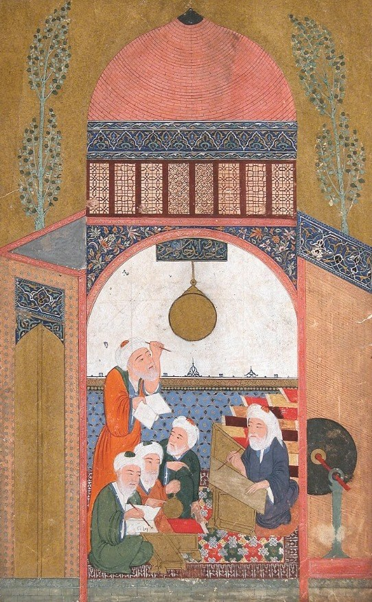

The Problem of Atypicality in LLM-Powered Psychiatry

Welcome! I am a philosopher and historian of science working on the material conditions of scientific practice. I am a Ph.D. candidate in Philosophy at the University of California San Diego, where I expect to complete my degree in June 2027.
My dissertation examines the transmission of astronomical traditions in medieval Iberia — from the Sindhind tradition to the Toledan Tables — and asks what role writing materials, above all paper, played in the scientific production of al-Andalus. Working across Arabic, Latin, and Greek manuscript traditions, I combine philosophy of science with manuscript studies to understand how the media on which science was written shaped the science itself.
Beyond the dissertation, I work on the philosophy of physics, the philosophy of social science, and the methodology of historical case studies. My co-authored publications include "Going Humean on the Flow of Time" (with Craig Callender) and "The Problem of Atypicality in LLM-Powered Psychiatry" (with Eugene Chua and Harman Brah). Before my doctorate, I studied philosophy as an undergraduate, worked for a year in academic publishing, and completed a master's degree in history and philosophy of science.
When I am not in the archive, you can find me studying Arabic, playing video games, or watching anime.

Areas of Specialization
History and philosophy of science · Philosophy of social science
Areas of Competence
History of philosophy (medieval, early modern, continental) · Data ethics · Philosophy of physics · Philosophy of neuroscience
Instruments, working papers, and the scholars between them — the scenes of scientific labor my research seeks to reconstruct.
Research
Publications & Work in Progress
Peer-reviewed publications
Going Humean on the Flow of Time
Works in progress
Talks
Selected Talks
Iberian Globalities through Ṣāʿid al-Andalusī's Ṭabaqāt al-Umam
A Silent Laborer in Medieval Iberian Science
Neural Entropy: Between Statistical Mechanics and Thermodynamics
The Problem of Atypicality in LLM-Powered Psychiatry
Least Action-Based Selection of Neuronal Populations
Teaching
Teaching
Instructor of record — Department of Philosophy, UCSD
PHIL 10 — Introduction to Logic
PHIL 32 — Philosophy and the Rise of Modern Science
Teaching assistant — selected
Curriculum Vitae
CV
A full account of my education, research, teaching, and service is in my curriculum vitae.
Contact
Get in touch
Department of Philosophy
University of California, San Diego
9500 Gilman Drive #0119
La Jolla, CA 92093-0119
Office: RWAC 0436